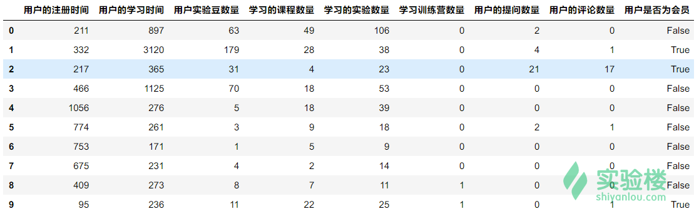
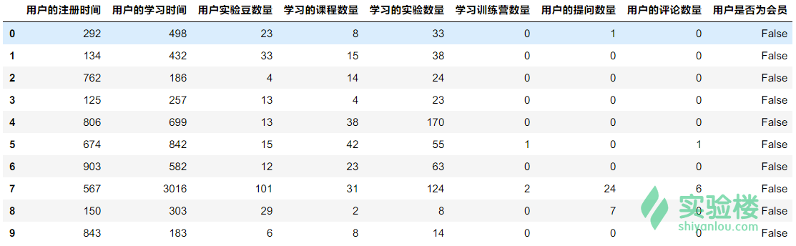
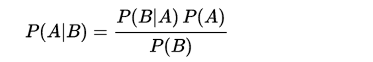
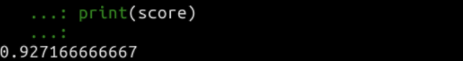
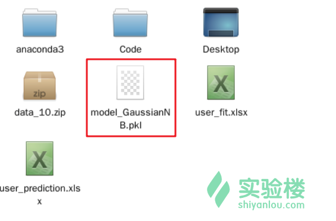
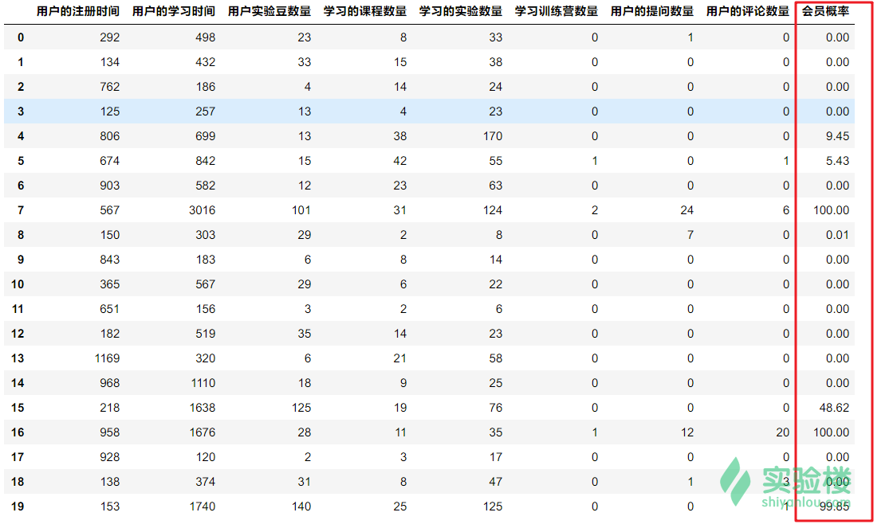
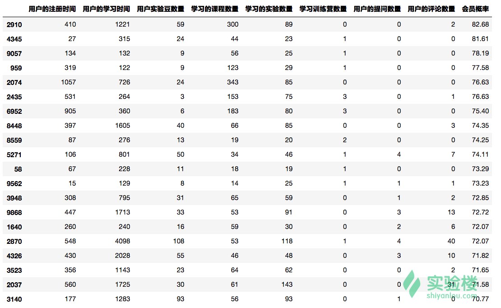

本实验为实验楼训练营课程 《Python 数据分析入门与进阶》的第十节，在该章节中我们将根据用户产生的数据对实验楼潜在的会员用户（可能产生购买会员的行为）进行预测。
如今，越来越多的用户开始购买实验楼的会员服务，享受最为完整的线上实验操作体验。但是，实验楼的一位注册用户是否购买会员的行为应该是建立在一定背景条件下。相信很少有用户刚刚完成注册不久，就直接购买会员。
比如，用户 A 在实验楼上学习了越来越多的免费课程，并对会员课程蠢蠢欲动。所以，他决定付费购买会员。或者像用户 B 通过不断地在线练习，积累了大量的实验豆。而实验豆正好可以抵扣一部分会员费用。于是打算购买会员服务。
一般来讲，促使付费行为发生的原因，往往都建立在用户的活跃度之上。没有足够的了解，也就没有足够强烈的付费意愿。
这一次，我们提供了实验楼用户的真实采样数据，你可以通过下面链接下载该数据。
wget http://labfile.oss.aliyuncs.com/courses/764/data_10.zip
# 解压
unzip data_10.zip
.
├── user_fit.xlsx
└── user_prediction.xlsx
user_fit.xlsx 数据集包含有 8 个特征项，以及用户是否为会员的标签，数据共计 40000条。预览如下：

user_prediction.xlsx数据集包含 10000 条数据，且数据特征项与 user_fit.xlsx 完全一致。唯一不同的地方在于，user_fit.xlsx 中既有会员数据也有非会员数据，而 user_prediction.xlsx 数据集中全部都为非会员用户。预览如下：

数据集已经做过相应的预处理工作，没有缺失值。最后一项会员标签，通过布尔值进行标识。True当前用户是会员身份，False 代表当前用户不是会员身份。
下面，我们想使用 user_fit.xlsx 数据集训练一个预测模型，用于预测 user_prediction.xlsx 非会员数据集中，有哪一些可能是潜在的会员用户。
朴素贝叶斯是一种可用于构建分类模型的方法，他是假设特征相互独立的情况下，运用贝叶斯定理进行后验概率计算的简单分类器。
我们先看一下贝叶斯定理。贝叶斯定理由英国数学家托马斯·贝叶斯命名，它是描述随机事件条件概率的一则定理。公式如下：

其中：
P(A)被称之为 A 的先验概率，也就是 A事件在不考虑B 因素条件下发生的概率。
P(A|B) 是在 B 事件发生的情况下A 事件发生的可能性，也被称作 A 的后验概率。
同理，P(A) 和 P(A|B) 的含义应该就很清楚了。如果你对概率论不太了解。那么，我们结合着本实验的数据集来解释。
我们的数据集拥有 8个特征值，分别为：用户的注册时间、用户的学习时间 用户实验豆数量、学习的课程数量、学习的实验数量、学习训练营数量 用户的提问数量、用户的评论数量。这些特征之间是相互独立的。
而这些特征可能会对最后的目标参数，也就是该用户是否为会员造成影响。也就是说，如果我们现在有一个会员的数据，我们知道他的 8 个特征取值，最后想了解他成为会员的概率有多大？
根据贝叶斯定理：
P(A|B) = P(B|A) P(A) / P(B)
也就是说（这里只选择前两个特征，以方便描述）：
P(会员| 用户的注册时间 x 用户的学习时间) = P(用户的注册时间 x 用户的学习时间 | 会员) x P(会员) / P(用户的注册时间 x 用户的学习时间)
我们认为特征之间是相互独立的。所以：
P(会员| 用户的注册时间 x 用户的学习时间) = P(用户的注册时间 | 会员) x (用户的学习时间 | 会员) x P(会员) / P(用户的注册时间) x P(用户的学习时间)
那么，像 P(用户的注册时间) 这样的概率 怎样求解呢？由于我们这里是连续变量，一般会针对其进行离散化处理，也就是通过假定一个区间，计算变量落在该区间内的概率。
最后，我们就可以计算出该用户是会员和不是会员的概率，通过比较得出分类属性。
为了帮助初学者，我们这里直接使用 scikit-learn 提供的贝叶斯算法来构建模型，从而降低自行构建模型的复杂程度。
scikit-learn 针对朴素贝叶斯提供了三种分类器，分别是：
naive_bayes.GaussianNBnaive_bayes.MultinomialNBnaive_bayes.BernoulliNB其中，高斯分布模型常用于特征值为连续型变量的数据集中，例如本实验中的数据集。高斯模型的特点在于它通常假设是这些连续数值为高斯分布，相比于直接把连续变量离散化的方法更优。伯努利模型常用处理特征变量为布尔值类型的数据集，多项式模型常用于文本分类。
下面，我们先尝试使用高斯分布朴素贝叶斯针对 user_fit.xlsx 数据集构建一个分类模型。代码非常简单。
# -*- coding: utf-8 -*-
import pandas as pd
from sklearn.model_selection import train_test_split
from sklearn.naive_bayes import GaussianNB
# 使用 Pandas 读取数据
df = pd.read_excel("user_fit.xlsx", header=0)
# 特征
x = df.iloc[:, 0:8]
# 目标
y = df['用户是否为会员']
# 安装 3:7 切分验证集和训练集
train_x, test_x, train_y, test_y = train_test_split(x, y, test_size=0.3)
# 构建高斯贝叶斯分类器
model_GaussianNB = GaussianNB()
# 使用训练集训练模型
model_GaussianNB.fit(train_x, train_y)
# 使用验证集评估准确度
score = model_GaussianNB.score(test_x, test_y)
print(score)
经过测试，得到了大约92.7%的准确率，结果还能接受。当然，由于数据会随机分配，你的预测准确率可能会有些许出入。

接下来，我们使用 user_fit.xlsx 全部数据用于训练模型，并将模型保存为二进制文件。
# -*- coding: utf-8 -*-
import pandas as pd
from sklearn.naive_bayes import GaussianNB
from sklearn.externals import joblib
# 使用 Pandas 读取数据
df = pd.read_excel("user_fit.xlsx", header=0)
# 特征
x = df.iloc[:, 0:8]
# 目标
y = df['用户是否为会员']
# 构建高斯贝叶斯分类器
model_GaussianNB = GaussianNB()
# 使用训练集训练模型
model_GaussianNB.fit(x, y)
# 保存模型
joblib.dump(model_GaussianNB, 'model_GaussianNB.pkl')
print('done.')
然后，你就能看到我们的二进制模型文件。

接下来，我们使用该模型去评估 user_prediction.xlsx 非会员数据集中，潜在会员用户的概率。
# -*- coding: utf-8 -*-
import pandas as pd
import numpy as np
from sklearn.externals import joblib
# 使用 Pandas 读取数据
df = pd.read_excel("user_prediction.xlsx", header=0)
# 特征
x = df.iloc[:, 0:8]
# 加载模型
model_GaussianNB = joblib.load('model_GaussianNB.pkl')
# 返回预测概率（%）
results = model_GaussianNB.predict_proba(x) * 100
# 将预测概率转换为 DataFrame
results_df = pd.DataFrame(np.around(results, 2), columns=['非会员概率', '会员概率'])
# 将预测概率添加到原数据集中最后一列
df_merged = pd.concat([df.drop("用户是否为会员", axis=1), results_df['会员概率']], axis=1)
# 输出前 20 列
print(df_merged.head(20))
我们可以看到，原 DataFrame 最后一列已经添加了我们预测某位用户是潜在会员用户的概率。

我们可以针对概率排序，将大于 50% 的用户筛选出来，对这些潜在会员用户给予重点关照。^ ^
除了使用高斯贝叶斯分类器，我们还可以使用人工神经网络来进行预测，人工神经网络同样可以返回概率值。关于人工神经网络的结构，我们在第 5 节分类与预测的课程中已经做过介绍，这里直接使用 sklearn 提供的神经网络模型。
同样，我们首先拿 user_fit.xlsx 看一看神经网络模型的分类效果。
import pandas as pd
from sklearn.model_selection import train_test_split
from sklearn.neural_network import MLPClassifier
# 使用 Pandas 读取数据
df = pd.read_excel("user_fit.xlsx", header=0)
# 特征
x = df.iloc[:, 0:8]
# 目标
y = df['用户是否为会员']
# 安装 3:7 切分验证集和训练集
train_x, test_x, train_y, test_y = train_test_split(x, y, test_size=0.3)
# 构建神经网络分类器
model_MLPClassifier= MLPClassifier(activation='logistic',max_iter=50,hidden_layer_sizes=(50,50,50))
# 使用训练集训练模型
model_MLPClassifier.fit(train_x, train_y)
# 使用验证集评估准确度
score_trainset = model_MLPClassifier.score(train_x, train_y)*100
score_testset = model_MLPClassifier.score(test_x, test_y)*100
print("训练集预测准确率: %.2f%%" % score_trainset)
print("测试集预测准确率: %.2f%%" % score_testset)
这里，我们使用最常见的 logistic 激活函数，建立一个含3 个隐含层，每层 50个神经元的网络。由于迭代次数较多，在线上实验环境中运行时间较长，你也可以调低数值用于测试。
运行得到的结果如下：
结果会比上面的贝叶斯分类器好一些，但效果依旧不是最理想的情况。原因是，实验楼的确有部分用户刚注册不久就直接购买了会员服务，对于这类用户群，使用本实验的方法很难进行有效预测。
同样，我们使用全部数据进行训练，对非会员数据进行概率预测：
import pandas as pd
import numpy as np
from sklearn.model_selection import train_test_split
from sklearn.neural_network import MLPClassifier
# 使用 Pandas 读取数据
df = pd.read_excel("user_fit.xlsx", header=0)
# 训练特征
x = df.iloc[:, 0:8]
# 训练目标
y = df['用户是否为会员']
# 读取预测数据
df_pre = pd.read_excel("user_prediction.xlsx", header=0)
# 预测特征
predict_x = df_pre.iloc[:, 0:8]
# 构建模型
model_MLPClassifier= MLPClassifier(activation='logistic',max_iter=50,hidden_layer_sizes=(50,50,50))
# 使用训练集训练模型
model_MLPClassifier.fit(x, y)
# 返回预测概率（%）
results = model_MLPClassifier.predict_proba(predict_x) * 100
# 将预测概率转换为 DataFrame
results_df = pd.DataFrame(np.around(results, 2), columns=['非会员概率', '会员概率'])
# 将预测概率添加到原数据集中最后一列
df_merged = pd.concat([df_pre.drop("用户是否为会员", axis=1), results_df['会员概率']], axis=1)
# 按会员概率降排序，并输出前 20 列
print(df_merged.sort_values(by='会员概率',ascending=False).head(20))

我们也发现，使用神经网络预测返回的概率值，没有出现像贝叶斯模型返回 100% 概率的情况，结果相对要更合理一些。
本章节，我们通过使用 sklearn 提供的朴素贝叶斯和神经网络方法，构建了较为简单的购买会员行为预测模型。由于我们的数据集是典型可用于监督学习的数据集，这里就采用了分类的方式完成。当然，由于这种行为预测的方法十分简单，或许实际使用情况并不会特别理想。实际生产环境中，如果想要得到更为准确的行为预测结果，可能需要多种算法交叉预测。例如，可以再引入时间序列预测方法，采样分析用户从注册到购买会员期间期间的行为变化。当然，这可能需要处理 GB 量级的数据，本课程就不再深入展开了。总之，数据分析没有唯一的方案，只有根据实际数据情况不断调整，得到更好的方案。